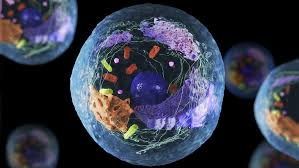
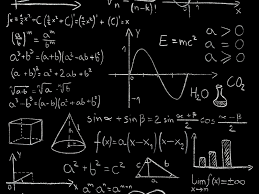
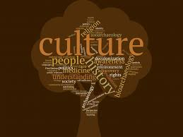
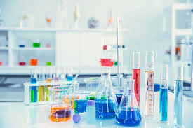

My Classes

Web Page Design
In this course students will learn about the basics of creating a personal web page using HTML and CSS. This class is a personal favorite as it evenly balances work with an enjoyable hobby. The class is taught by the one and only Prof Asmahan Ali (The best New Paltz has to offer).
Class Rating: 10/10

General Biology I
In this course, the first part of 2 classes, students will learn about the introduction to the scientific study of life. The course includes the molecular and cellular organization of living systems, the principles of classical and molecular genetics, and the major energy transformations involved in metabolism.
Class Rating: 6/10

Calculus 1
In this course students will learn about the foundations required to understand calculus as a whole. As the first class of many other calculus classes, students learn about limits, derivatives, and integrals. Taught by Prof Robin Acton, I personally enjoy the satifaction of problem solving in this course.
Class Rating: 9/10

Cultural Anthropology
This course introduces the concepts, theories, and methods of cultural anthropology. Students will learn how anthropologists approach the study of culture and its influence on social life, and how anthropologists have explored what it means to be human in particular times and places
Class Rating: 7/10

General Biology Lab
This course is an introduction to modern biology: molecular and cellular organization of living systems, energy transformations and metabolism, the principles of classical and molecular genetics, and the basic embryological changes during the development of an organism.